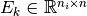

Basics of MPI-parallel NGSolve¶
MPI usage¶
MPI processes are linked via so-called communicators. From Python, we have access to a handle to this opaque communicator object.
It provides some basic functionality, for example it can tell us the number of processes it contains, and what out specific identifier within that set is.
[4]:
%%px
from ngsolve import *
print("Hello from rank ", mpi_world.rank, ' of ', mpi_world.size)
[stdout:0] Hello from rank 0 of 4
[stdout:1] Hello from rank 1 of 4
[stdout:2] Hello from rank 2 of 4
[stdout:3] Hello from rank 3 of 4
Additionally, “mpi_world” provides:
- time measurement
- barriers
- computing sums, minima, maxima
[5]:
%%px
comm = mpi_world
t = comm.WTime()
s2 = comm.Sum(1)
t = comm.Max(comm.WTime()-t)
if comm.rank==0:
print('There are ', s2, ' of us, which took us ', round(t,6), 'seconds to figure out')
[stdout:0] There are 4 of us, which took us 0.002464 seconds to figure out
Parallel NGSolve objects do communication on C++ side in the background, so in most cases, this is all the MPI functionality we need to access directly.
For situations where it is necessary to explicitely do communication on python side, there is the mpi4py package.
Distributed Meshes¶
When we load a mesh from a file in parallel, it gets distributed among the ranks and each one gets only a part of it, rank 0 gets nothing.
[6]:
%%px
mesh = Mesh('square.vol', comm)
print('rank', str(comm.rank)+"'s part of the mesh has ", mesh.ne, 'elements, ', \
mesh.nface, 'faces, ', mesh.nedge, 'edges and ', mesh.nv, ' vertices')
[stdout:0] rank 0's part of the mesh has 0 elements, 0 faces, 0 edges and 0 vertices
[stdout:1] rank 1's part of the mesh has 77 elements, 77 faces, 128 edges and 52 vertices
[stdout:2] rank 2's part of the mesh has 74 elements, 74 faces, 125 edges and 52 vertices
[stdout:3] rank 3's part of the mesh has 79 elements, 79 faces, 131 edges and 53 vertices
However, the entire geometry information is present everywhere:
[7]:
%%px --targets 0:5
print('rank', comm.rank, 'Materials:', mesh.GetMaterials())
print('rank', comm.rank, 'Boundaries: ', mesh.GetBoundaries())
[stdout:0]
rank 0 Materials: ('default',)
rank 0 Boundaries: ('bottom', 'right', 'top', 'left')
[stdout:1]
rank 1 Materials: ('default',)
rank 1 Boundaries: ('bottom', 'right', 'top', 'left')
[stdout:2]
rank 2 Materials: ('default',)
rank 2 Boundaries: ('bottom', 'right', 'top', 'left')
[stdout:3]
rank 3 Materials: ('default',)
rank 3 Boundaries: ('bottom', 'right', 'top', 'left')
Distributed Finite Element Spaces¶
When we define a Finite Element Space on a distributed mesh, each rank constructs a Finite Element Space on it’s part of the mesh.
[8]:
%%px
fes = H1(mesh, order=3, dirichlet='bottom|left')
print('fes on rank', comm.rank, 'has', fes.ndof, 'DOFs, globally we have ', fes.ndofglobal)
[stdout:0] fes on rank 0 has 0 DOFs, globally we have 1096
[stdout:1] fes on rank 1 has 385 DOFs, globally we have 1096
[stdout:2] fes on rank 2 has 376 DOFs, globally we have 1096
[stdout:3] fes on rank 3 has 394 DOFs, globally we have 1096
Taking the sum of the local number of degrees of freedofs gives us a peculiar result:
[9]:
%%px
nd2 = comm.Sum(fes.ndof)
if comm.rank==0:
print('Strangely, the sum of all local DOFs is ', nd2, '!=', fes.ndofglobal)
[stdout:0] Strangely, the sum of all local DOFs is 1155 != 1096
Information about how the local DOFs stick together on a global level are stored in the “ParallelDofs” object:
[10]:
%%px
pd = fes.ParallelDofs()
print('rank', comm.rank, 'has', pd.ndoflocal, 'local DOFs, globally we have', pd.ndofglobal)
[stdout:0] rank 0 has 0 local DOFs, globally we have 1096
[stdout:1] rank 1 has 385 local DOFs, globally we have 1096
[stdout:2] rank 2 has 376 local DOFs, globally we have 1096
[stdout:3] rank 3 has 394 local DOFs, globally we have 1096
We can find out which DOFs are shared with which ranks.
[11]:
%%px --target=3
print('I am rank ', comm.rank)
print('---')
for k in range(min(10,fes.ndof)):
print('I share DOF', k, 'with ranks:', [p for p in pd.Dof2Proc(k)])
print('... and so forth ...')
print('\n')
for p in range(0, comm.size-1):
if len(pd.Proc2Dof(p)):
print('DOFs I share with rank', p, ': ', [p for p in pd.Proc2Dof(p)])
I am rank 3
---
I share DOF 0 with ranks: []
I share DOF 1 with ranks: []
I share DOF 2 with ranks: []
I share DOF 3 with ranks: []
I share DOF 4 with ranks: []
I share DOF 5 with ranks: [1]
I share DOF 6 with ranks: [2]
I share DOF 7 with ranks: []
I share DOF 8 with ranks: []
I share DOF 9 with ranks: []
... and so forth ...
DOFs I share with rank 1 : [5, 15, 22, 30, 37, 39, 40, 47, 50, 83, 84, 135, 136, 173, 174, 213, 214, 251, 252, 259, 260, 267, 268, 297, 298]
DOFs I share with rank 2 : [6, 16, 23, 28, 29, 30, 33, 36, 87, 88, 139, 140, 179, 180, 199, 200, 201, 202, 207, 208, 229, 230]
There are a couple of points to consider here:
- Locally, DOFs are numbered 0..ndoflocal-1.
- There is no global enumeration!
- The local numbering of DOFs is conistent across subdomain boundaries.
Distributed Weak Formulations & Linear Algebra¶
Linear- or Bilinearforms can be split into subdomain contributions.
For example, the usual bilinear form associated to Poisson’s equation can be split into defined by:
When we write down BLFs and LFs for distributed FESpace, we actually simply write down it’s local contributions.
The FESpace figures out how to stick them together to form global forms.
[12]:
%%px
u,v = fes.TnT()
a = BilinearForm(fes)
a += grad(u) * grad(v) * dx
a.Assemble()
Let us see what we get after assembling the bilinear form:
[13]:
%%px --target=1
print('a.mat is a', type(a.mat))
a.mat is a <class 'ngsolve.la.ParallelMatrix'>
Parallel Matrices and Vectors¶
The general principle for distributed linear algebra objects is:
Parallel Object = Local Object + ParallelDofs
Matrices¶
[14]:
%%px --target=1,2
print('a.mat.local_mat on rank', comm.rank, 'is a', type(a.mat.local_mat), 'of dimensions', a.mat.local_mat.height, a.mat.local_mat.width)
print('lcoal fes ndof: ', fes.ndof)
print('a.mat.row_pardofs: ', a.mat.row_pardofs)
print('a.mat.col_pardofs: ', a.mat.col_pardofs)
print('fes pardofs: ', fes.ParallelDofs())
[stdout:1]
a.mat.local_mat on rank 1 is a <class 'ngsolve.la.SparseMatrixd'> of dimensions 385 385
lcoal fes ndof: 385
a.mat.row_pardofs: <ngsolve.la.ParallelDofs object at 0x7f3cbbfbd298>
a.mat.col_pardofs: <ngsolve.la.ParallelDofs object at 0x7f3cbbfbd298>
fes pardofs: <ngsolve.la.ParallelDofs object at 0x7f3cbbfbd298>
[stdout:2]
a.mat.local_mat on rank 2 is a <class 'ngsolve.la.SparseMatrixd'> of dimensions 376 376
lcoal fes ndof: 376
a.mat.row_pardofs: <ngsolve.la.ParallelDofs object at 0x7fd254130110>
a.mat.col_pardofs: <ngsolve.la.ParallelDofs object at 0x7fd254130110>
fes pardofs: <ngsolve.la.ParallelDofs object at 0x7fd254130110>
Each rank assembles it’s local contribution to the global bilinear form into a sparse matrix, with dimensions matching that of the local FESpace!
Let us assume we have some global numbering, and assume that is the set of indices corresponding to DOFs on rank  .
.
The ebmedding matrices  take local vectors of dimension and gives us global vectors of dimension  .
.
The global matrix  , operating on vectors of dimension , can be assembled from the local matrices in the same way we usually assemble our FEM matrices from element matrices:
, operating on vectors of dimension , can be assembled from the local matrices in the same way we usually assemble our FEM matrices from element matrices:
Importantly, the local matrices are not simply diagonal blocks of the global matrix,  only has partial values for DOFs that are shared with another rank, .
only has partial values for DOFs that are shared with another rank, .
Vectors¶
Things look very similar for parallel vectors, they are again implemented as short, local vectors that make up the global one:
[15]:
%%px
f = LinearForm(fes)
f += SymbolicLFI(x*y*v)
f.Assemble()
gfu = GridFunction(fes)
[16]:
%%px --target 1
print('length of vector: ', len(gfu.vec))
print('length of local vec: ', len(gfu.vec.local_vec))
print('dim local fes: ', fes.ndof)
print('dim global fes: ', fes.ndofglobal)
length of vector: 385
length of local vec: 385
dim local fes: 385
dim global fes: 1096
Parallel Vectors additionally have a “ParallelStatus”, which can be:
Cumulated, when the local vectors are just restrictions of the global vector
 :
:
Distributed, when, similarly to parallel matrices, the global vector is the sum of local contributions

The vector of the linear form  is a collection of locally assembled vectors, so it is distributed.
is a collection of locally assembled vectors, so it is distributed.
The vector of the GridFunction gfu has been initialized with zeros, so it has consistent values, it is cumulated.
[17]:
%%px --target 1
print('status f vec: ', f.vec.GetParallelStatus())
print('status vec.local_vec: ', f.vec.local_vec.GetParallelStatus())
print('')
print('status gfu vec: ', gfu.vec.GetParallelStatus())
print('status vec.local_vec: ', gfu.vec.local_vec.GetParallelStatus())
status f vec: PARALLEL_STATUS.DISTRIBUTED
status vec.local_vec: PARALLEL_STATUS.NOT_PARALLEL
status gfu vec: PARALLEL_STATUS.CUMULATED
status vec.local_vec: PARALLEL_STATUS.NOT_PARALLEL
Multiplication of a sub-assembled parallel matrix with a cumulated vector gives a distributed one:
[18]:
%%px
v = gfu.vec.CreateVector()
w = gfu.vec.CreateVector()
v[:] = 1.0
w.data = a.mat * v
[19]:
%%px --target 1
print('status v: ', v.GetParallelStatus())
print('status w: ', w.GetParallelStatus())
status v: PARALLEL_STATUS.CUMULATED
status w: PARALLEL_STATUS.DISTRIBUTED